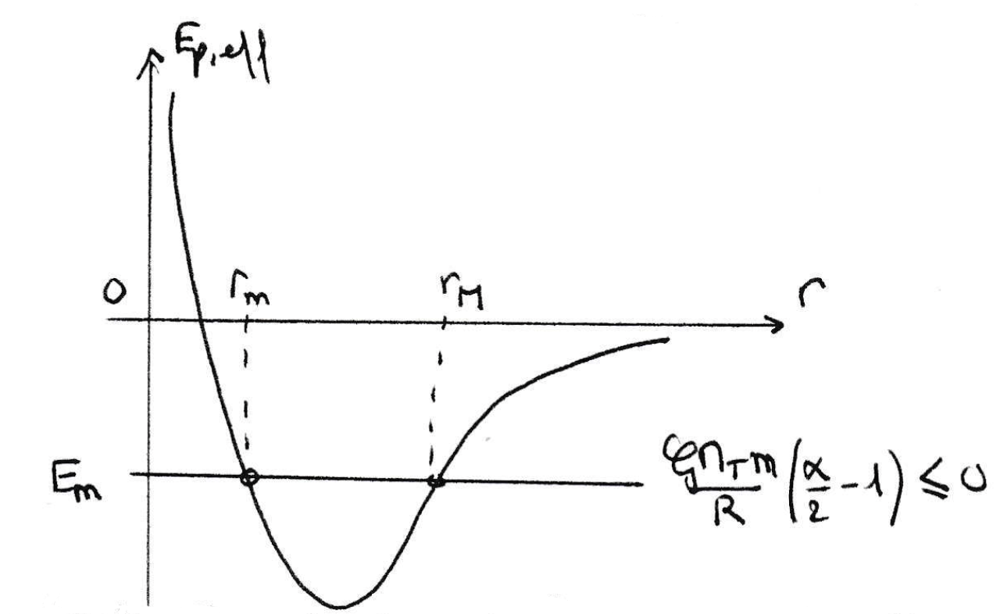

PrepOral
[MPSI] [Maison] [2]
Tir d'un projectile
Enoncé
On tire horizontalement un projectile à la surface de la Terre avec une vitesse $V_0$ telle que :
$$V_0^2 = \alpha \dfrac{\mathcal{G} M_T}{R}$$
où $1 \leq \alpha \leq 2$, $\mathcal{G}$ désigne la constante de gravitation universelle, $M_T$ la masse de la Terre et $R$ son rayon.
1. Déterminer l’énergie mécanique puis l’énergie potentielle effective du projectile en fonction de la distance $r$ au
centre de la Terre ($r = R + h$).
2. Tracer l’allure de ces énergies en fonction de la distance $r$ au centre de la Terre.
3. En déduire l’expression des altitudes maximale et minimale du projectile.
4. Préciser la nature de la trajectoire dans les cas $\alpha = 1$, $1 < \alpha < 2$ et $\alpha = 2$.
Commentaires
Encore jamais posé !
Corrigé
1) On a : $$E_m=\frac{1}{2} m \dot r ^2 + \frac{mL_0^2}{2mr^2}-\frac{ m \mathcal{G} M_T}{r}$$ Or, $L_0=mRv_0$ ainsi : $$E_{p,eff}=\mathcal{G}M_T m \left( \frac{\alpha R}{2r^2}-\frac{1}{r} \right)$$ 2) 
3) On résout $E_m=E_{p,eff}(r)$ et on trouve : $$h_{min}=0 \; \; \text{ et } \; \; h_{max}=\frac{\alpha-1}{2-\alpha} R$$ 4) Si $\alpha=1$, on a une trajectoire circulaire de rayon R.
Si $1 \lt \alpha \lt 2$, la trajectoire est une ellipse de demi grand axe $2a=2R+h_{max}$.
Enfin si $\alpha=2$, on a une trajectoire parabolique.